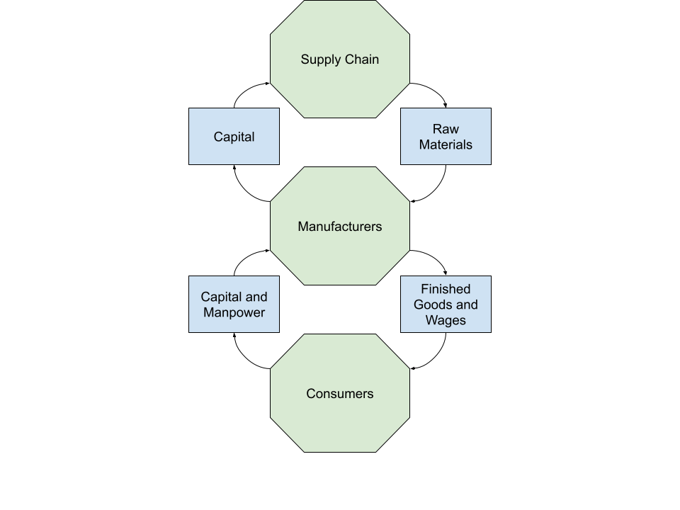

Mass Hysteria
Due to the rapid spread of the coronavirus across the globe and the lack of information about it, consumers across the world entered a state of panic upon the declaration of a state of emergency; within days of the announcement, the supply of face masks, sanitational products, and even seemingly unrelated goods such as toilet paper was quickly exhausted. Researchers at Singapore’s Institute of Mental Health have hypothesized that, “...[panic buying] is a way of coping with a stressful unmet situation (with constant news of rising numbers of infected individuals and deaths worldwide) whereby one's survival and that of the community are at stake during country lockdowns” (Sim, 2020). Although many of the consequences of the coronavirus have been seen during previous epidemiological crises, the usage of panic purchasing as a coping mechanism is unique to the COVID-19 pandemic.
In addition to shortages created by short-term panic purchasing, the coronavirus has also caused long-term economic damage. The basic economic cycle involves three major groups: consumers, manufacturers and the supply chain. Consumers are individuals who perform labor in exchange for a paycheck and buy products from manufacturers. Manufacturers are businesses that purchase labor from consumers and raw materials to create goods that are sold to consumers. The supply chain is made up of businesses that sell the materials used to create goods to manufacturers. Every component of the system is completely dependent upon the others; if one of them is disrupted, the entire economy is affected. When the lockdown orders were first issued, many workers lost their jobs or had their work hours decreased. As a result, the overall consumer demand for goods drastically declined due to aggregate consumer income decreasing; additionally, consumers tend to spend less and save more in times of hardship. In response to this decline in demand, manufacturers decreased their production of goods accordingly, which caused raw material suppliers to slow the gathering of resources. After the development of vaccines for COVID-19, consumer demand began to recover, but raw material suppliers were unable to harvest resources at a rate high enough to meet the needs of manufacturers. The Institute of Supply Management found that “...about 75% of the companies reported supply chain (SC) disruptions, 80% expected some kind of disruptions in the near future, 62% reported delays in receiving goods, and 53% of firms reported difficulties in getting information from China” (Magableh, 2021). Due to the current scarcity of raw materials and increased demand, the price of these components has risen; the higher prices of constructing goods are passed on to the consumer. According to the Biden administration, “Another impact of the shortages has been abrupt price increases. Between May 2020 and May 2021, prices of commodities tracked within the Producer Price Index rose by 19 percent, the largest year-over-year increase since 1974...” (Why the Pandemic Has Disrupted Supply Chains, 2021).
COVID-19 is the first global pandemic to occur in the digital age. Differences between the public perception of COVID-19 and that of historical outbreaks can be attributed to the rise of the Internet as the primary source of information for many. Before the Internet entered mainstream culture, television news channels were society’s primary channels of information; at that time, the flow of information was controlled by a few organizations that faced relatively low levels of competition. The landscape of journalism completely changed with the dawn of the Internet; the low barrier to entry of the digital world drastically increased the amount of competition in the industry. To get ahead of the competition, organizations began to create content that was misleading and provocative in nature. According to a study on the spread of information on Twitter, “False news reached more people than the truth; the top 1% of false news cascades diffused to between 1000 and 100,000 people, whereas the truth rarely diffused to more than 1000 people. Falsehood also diffused faster than the truth. The degree of novelty and the emotional reactions of recipients may be responsible for the differences observed” (Vosoughi, 2018). The universal impact and emotional nature of the pandemic have amplified the spread of falsehoods. Misleading and inaccurate information regarding COVID-19 vaccination has prolonged the pandemic by cultivating distrust of institutions and opposition to vaccines. According to a study of the anti-vaccine movement, “The anti-vaccine movement may further prolong the duration of the COVID-19 pandemic and may increase mortality or morbidity, resulting in an exacerbation of health inequalities and flaring the economic and social disparities. This may lead to not only an increase in the burden of COVID-19 infection but also mental health issues in poorer and marginalized people across the different [lower and middle income countries]”, (Ransing, 2021).
A study about how COVID-19 was portrayed in the media found that, “...COVID-19 coverage accounted for approximately 25.3% of all front-page online news articles between January and October 2020” (Krawczyk, 2021). Although COVID-19 is a massive global event, the nonstop news coverage of the pandemic is likely harmful to viewers. According to an international analysis of the coronavirus in the media, “COVID-19 media coverage is inherently harmful; the disease represents an ongoing, deadly pandemic. This intrinsic negativity, which naturally transfers to media coverage of the virus, could cause mental health issues. Research on media effects has long documented that negative news can lead to mild to severe mental health issues among consumers. Importantly, due to the scale and severity of COVID-19, media attention has been disproportionately focused on pandemic-related news, which could further affect individuals already facing more significant mental health challenges” (Su, 2021).